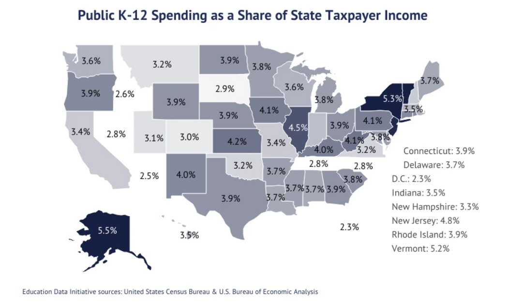
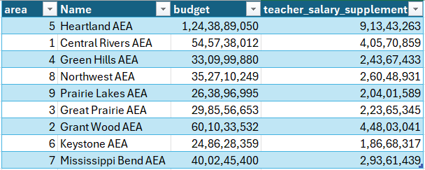
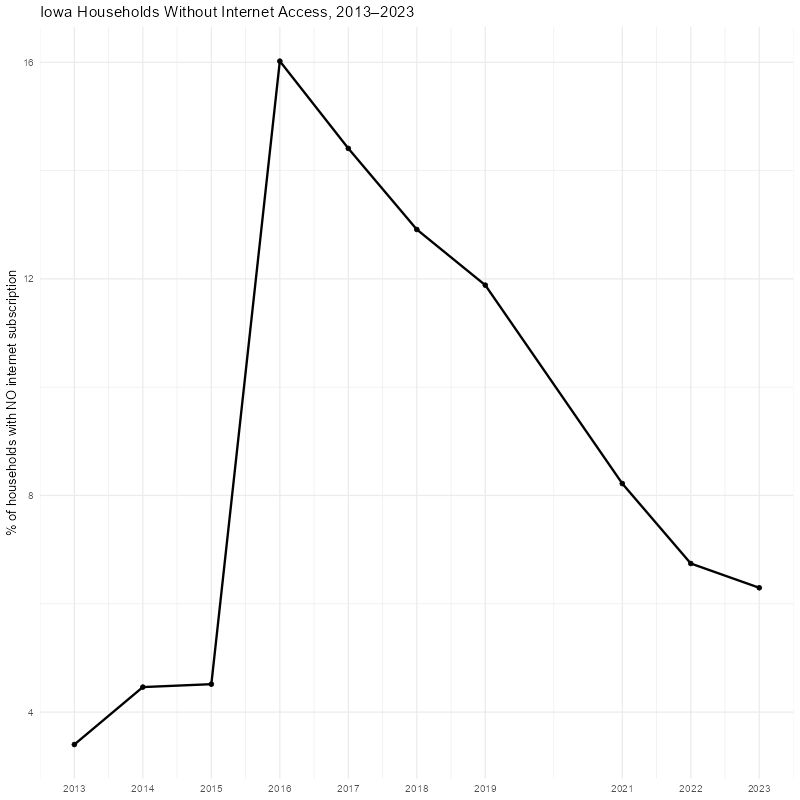

Introduction
What we did this week?
Based on the midterm presentation feedback, we went back to analyze the education, but this time with a deeper focus on K-12:
- Student engagement and performance
- Resources and infrastructure
Iowa Education Database
The Iowa Department of Education maintains several independent datasets about the schools, ranging from proficiency in math to budget allocation. Although useful, each data file only tells a part of the story. Consequently, we decided to design and implement a database where all the information is centralized and connected through the school or school district codes, to get the complete picture of the STEM situation. The following picture shows a high level view of the database.
Catalog tables (italic): Information that barely or does not change. For example, the subjects catalog always includes math and science.
Detail tables (bold): Information that connects the catalogs, and information related to those catalogs. For example, Profile Per Year maintains information from the school, the educational measures, the subjects and categories, and their specific percentages, per year.
{kind=link}
K-12 situation in Iowa
School classification
Classifications
- The Iowa Department of Education conducts a performance report called ISSP
- Encompasses all public schools in Iowa
- Uses a index score to grade each school based on:
- Student Proficiency
- Student Growth
- Graduation Rate
- English Language Growth (for students with English as second language)
- Attendance
- College Readiness
- Index scores are split into 6 different categories:
- Exceptional - Exemplary results; Usually seen as models for best practices
- High Performing - Seen as doing very well in most metrics
- Commendable - Seen as above average performance across most categories
- Acceptable - Seen as meeting basic performance expectations
- Needs Improvement - Below-average performance, may require targeted support
- Priority - Lowest performance tier across the state, need intensive state support and intervention
School analysis 2022-2023 vs 2023-2024
To look at the K-12 status in Iowa, we decided compare the amount of schools in each category from 2022 to 2023 for each type of school (Elementary, Middle, High):
High School
{kind=link}
{kind=link}
Middle School
{kind=link}
{kind=link}
Elementary School
{kind=link}
{kind=link}
- In 2022, each type of school follows an approximately normal distribution.
- In 2023, the distribution across schools became more uniform.
- This is concerning, as it suggests a growing number of schools are in need of support.
- This trend is especially evident in high schools, where the approximately normal distribution seen in 2022 has flattened significantly in 2023
Classifications transitions
Since trends show that there is an increased amount of schools in “Priority” and “Needs Improvement” categories, we need find from which category these schools are transitioning from. Cleaning and filtering the data gives us the following information:
- 158 schools went from Acceptable to Needs Improvement or Priority
- 81 schools went from Commendable to Needs Improvement or Priority
- 4 schools went from High Performing to Needs Improvement or Priority
- 1 school went from Exceptional to Needs Improvement or Priority- Schools that were on the borderline of needing help or had average index scores tended to transition the most
- Schools that perform well, tend to stay at the top
- This might highlight the need for early support and intervention for schools in the middle performance range since those are the schools transitioning the most
- Using this information can also help us figure out which schools to focus on when looking at our STEM data
Curriculum
ISASP math, science
In 2015 the US government passed the Every Student Succeeds Act (ESSA).
In 2018 Iowa legislature passed bill HF 2235 which mandated the assessment of educational standards.
The Iowa Statewide Assessment of Student Progress (ISASP) is a statewide, standardized, exam created by Iowa Testing Programs at the University of Iowa.
The exam is administrated as follows:
{kind=link}
Analysis of proficient students per grade/ educational area
{kind=link}
{kind=link}
{kind=link}
{kind=link}
The following picture shows the Education Agencies across Iowa, which provide regional services to students, teachers, and the communities.
{kind=link}
Resources and infrastructure
Budget concepts
Analysis of budget per educational area
Internet access per educational area
Resources and infrastructure
1. Budget
In 2022, the U.S. spent $857 billion on public K–12 education!
These funds come from local, state, and federal governments.
The funding depends on a state’s share of income and tax base.
K–12 Education Spending by State Per Pupil
Key findings:
- Average U.S. K–12 spending per pupil: $20,387
- New York has the highest: over $33K per pupil
- Iowa ranks below the national average
-
Source: https://educationdata.org/public-education-spending-statistics
Classification by educational areas
- 
2. Internet Access
Internet Access Map
Key findings:
Among the midwestern states, Iowa has the highest percentage of people without internet access after Minnesota and South Dakota.
Davis County in Iowa has the highest percentage of non-Internet users at 28.8 %.
And the least in Story County at 5.3 %.
Internet Access Over Time
- 
Limitations:
- Data not available for the year 2020.
- Technology data is only available till 2014.
- Shape files are not available for Educational Areas.
Next steps
- K-12 analysis: teacher training and support, STEM opportunities (summer camps, events, programs)
- Workforce analysis: GDP, GDP intensity, R&D invested in math, science, and engineering
- Databases documentation! (dictionary document)
- Influence diagram